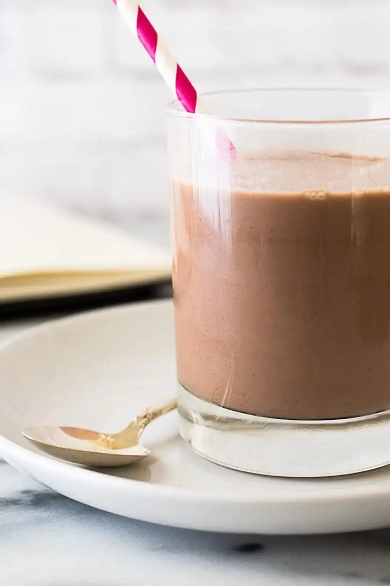

Chocolate Milk

Chocolate Milk!
- 1 tablespoon (5g) cocoa powder
- 1 tablespoon water
- 1 cup milk, divided (any percentage)
- 1 tablespoon sugar
- In a microwave-safe cup or mug, combine cocoa powder and water.
- Microwave for 15 to 20 seconds, until steaming, and stir until very smooth.
- Add 1/4 cup of the milk and the sugar, and microwave for an additional 15 to 30 seconds, until steaming.
- Stir until completely mixed. Stir in remaining milk, and enjoy.